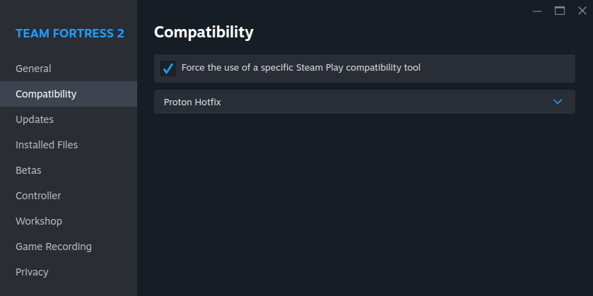
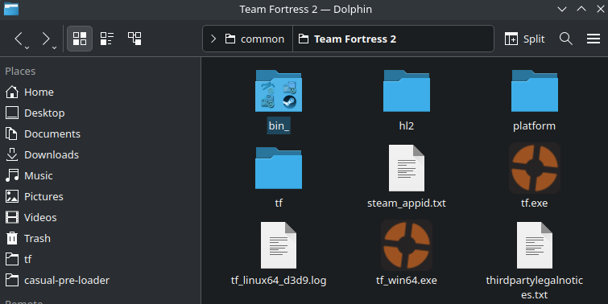
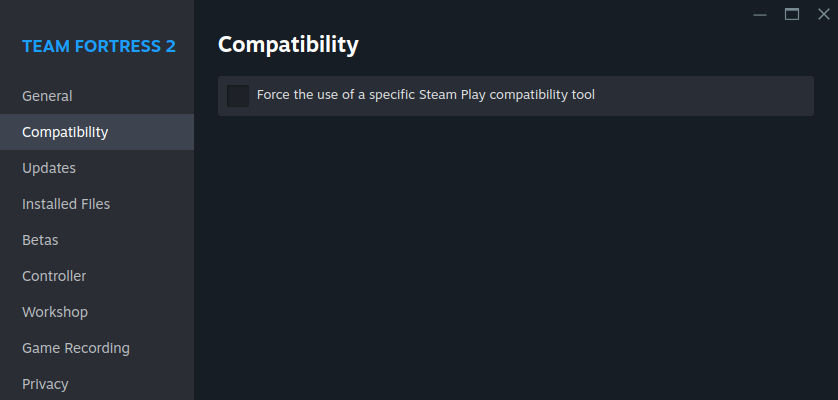
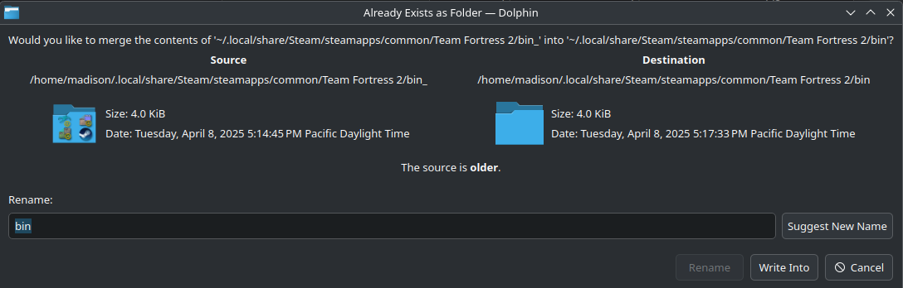
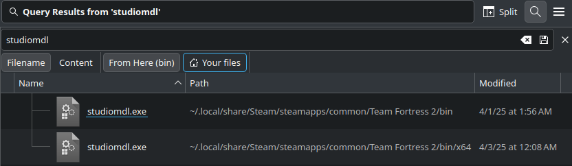

Tutorial¶
Here you can find two tutorials, one for Windows, and one for Linux. If you're having trouble with your already installed preloader, please refer to the troubleshooting doc.
If you encounter any error, please try upgrading to the latest version first.
If you need further assistance installing the preloader, or just want to chat, join the discord!
If you want a video supplement, please refer to the Video Supplement section!
Windows Tutorial:¶
Step 1: Installation¶
- Install the latest version of the preloader from GitHub or Gamebanana.
- Once you have the zip file, extract it, and put the folder anywhere you'd like (OTHER THAN CUSTOM, DO NOT PUT IT IN CUSTOM!). Personally, I keep mine on my desktop.
Step 2: Adding your mods¶
- Prepare your mods. The preloader can handle all mods, even mods that aren't 'casual compatible', so don't be afraid to use whatever you'd like! Once you have all the mods you want, set them aside. While you can put your hud in the preloader, it does the exact same thing as putting it in custom, so you don't have to if you don't want to.
- Open the preloader by running
RUNME.bat, and follow the first-time set-up instructions that pop up. The 'import' tab can be ignored unless you're updating from a super old version of the preloader, or decided not to let the auto-updater update your preloader. - Once the preloader is open, drag and drop your mods anywhere over the window to import them.
Step 3: Configuring your mods¶
-
The first tab of the preloader is for your particles, on this tab you can mix and match your different particle packs for whatever look you're going for. If you want even more in-depth customization, instead of the general groups we put the particles into, navigate to the top left of your window, and un-check 'simple particle mode'.
-
The second tab of the preloader is everything else, including your models, animations, huds, skins, skyboxes, etc. You first check all the mods you want to use on the left by clicking on the check box next to them, then change the load order on the right by clicking and dragging. If you have an animation pack, and any model mod, make sure to load your animation pack last!
NOTE: Some mods you install may have the same files included. The preloader warns you of this with this caution symbol. For mods like this, make sure the one you want to see more of is HIGHER in your load order (bigger number). You can also hover over the caution symbol to see how many files are the same (like a minecraft texture pack!).
Step 4: Installing your mods to TF2¶
-
Don't forget to add
+exec w/config.cfgto your launch options! You can do this by going onto the page for your game in steam. Then, you go to settings, down to properties, then paste the command in your launch options! -
Click install on the bottom right!
-
Launch tf2 and boot up a casual match! You should see all of your mods working.
Linux Tutorial:¶
ples fix and format dis for me im not familiar with the steps needed for the linux version, or just send me the general steps on discord and ill rewrite and format :D -Fethars the chick
We need studiomdl.exe from the Windows version of TF2.
First, force the use of proton in game properties, make sure to click "update" after.

Once updated, navigate to your Steam/steamapps/common/Team Fortress 2/ and rename bin/ to something other than bin/, for example, bin_/.

Disable proton in game properties, and update again.

Back in Steam/steamapps/common/Team Fortress 2/, rename bin_/ back to bin/ to merge the directories, or copy its contents into bin/.

If done right, you should now see studiomdl.exe inside the bin/ folder!

Now you can clone the repo, or install it as an AUR package!
Using yay:
yay -S casual-pre-loader-git
casual-pre-loader
Using paru:
paru -S casual-pre-loader-git
casual-pre-loader
Or with git:
git clone https://github.com/cueki/casual-pre-loader
cd casual-pre-loader
python -m venv .venv
source .venv/bin/activate # (you will need to activate the venv each time)
pip install -r requirements.txt
python main.py
If you're on Ubuntu, or an Ubuntu-based derivative (such as Mint or PopOS), you may get an error similiar to the following:
This application failed to start because no Qt platform plugin could be initialized. Reinstalling the application may fix this problem.
Installing libxcb-cursor-dev should solve the issue:
sudo apt-get install -y libxcb-cursor-dev
Video Supplement:¶
This will eventually be updated to the most recent version, and have a linux section - Feathers